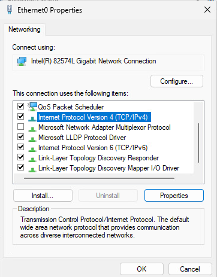
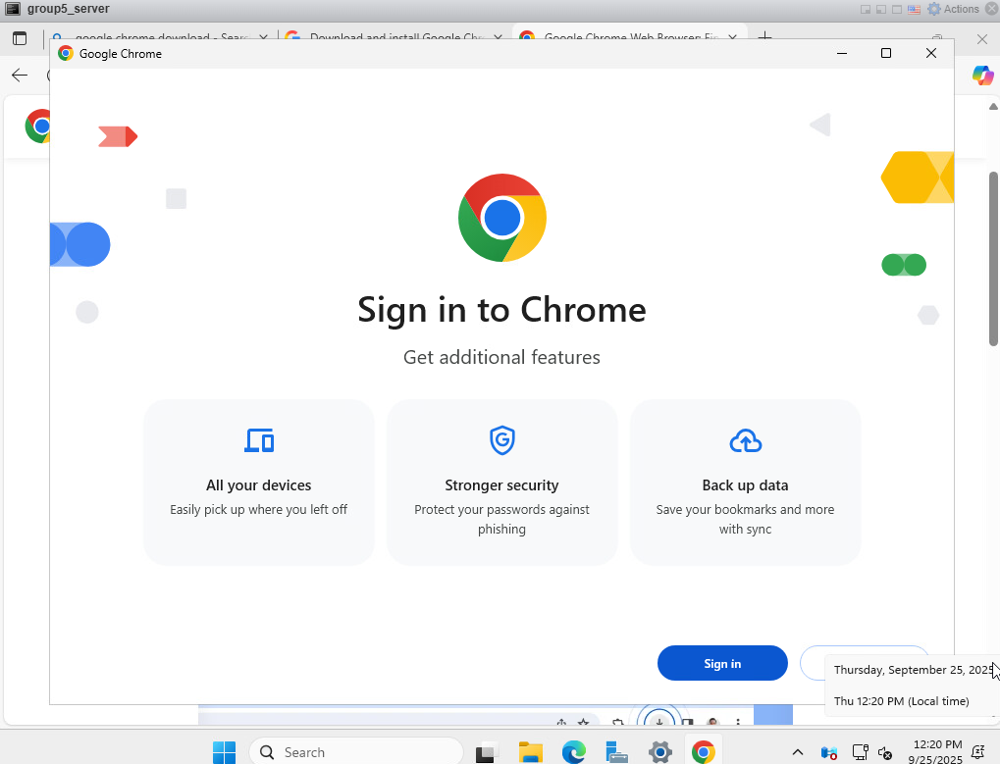
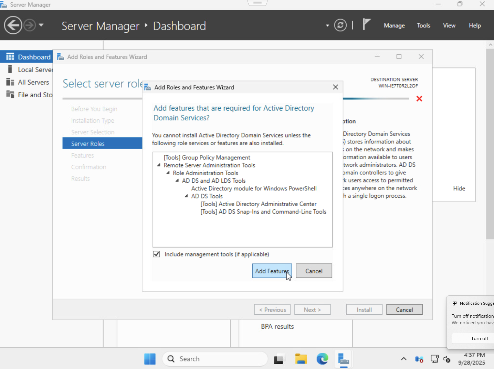

Server Configuration
Written by: Shane Tomb
Screenshots provided by: Isaac Samsel
On the server manager window in the server, click the “Configure this local server” link.

When the properties Windows open, next to the Ethernet0 property, click the IPv4 address link.
This will open up an internet connection manager window, right click the “Ethernet0” and select properties.
On the resulting device properties page, click the properties button.
Under the list of networking properties, click internet protocol version 4 TCP IPv4 and click properties.

Change the obtain an
IP address automatically to use the following IP address and put in the
specifics:
IP address- 172.16.5.10
Subnet mask- 255.255.0.0
Default gateway- 172.16.5.1
Change the obtain DNS server address automatically to Use the following DNS server addresses and put in the specifics:
Preferred DNS server: 8.8.8.8
Alternate DNS server: . . .

Open Microsoft edge/copilot on the server, open the download site for Chrome, click on the ”Download Chrome" link
When the Chromesetup.exe file is downloaded click it and run it.
Now open Chrome on the server to test its internet capabilities.
Active Directory
Documentation by: Shane Tomb
Screenshots from: Jovany Philistin
On the server manager dashboard click on Add Roles and Features
When the Add roles and features wizard opens, click next.

On the server roles page of the wizard, select “Active directory domain services”
This will open another window asking to add the features of the Active directory. Click add features.
Back on the server roles page, click next.
On the confirmation page, click install.
The features will install.
The wizard will close and another window that shows installation progress will open.
On the new window, click “promote this server to a domain controller”
This will open a new wizard, select the “Add a new forest” option and type in a root domain name.

On the domain
controller options page, select the following settings:
Forest function level: Windows server 2025
Domain function level: Windows server 2025
Domain name system (DNS) server ✔
Global catalog (GC) ✔
Type in a new password and confirm it.
On the installation page, it will install the new features, then the window will close.